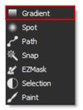
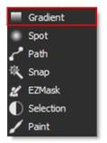
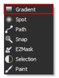
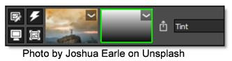
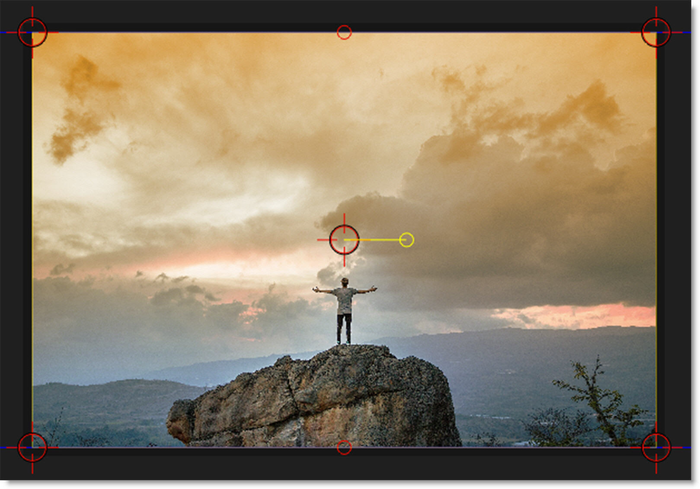

Applying a Gradient Mask to a Layer
A Gradient mask creates a linear top to bottom or left to right gradient and is adjusted using the four points around the corners of the image as well as controls in the Toolbar.
1 Select a filter and preset that changes the image in an obvious way.
2 For instance, select the Grads/Tints > Tint filter.
3 Click the Add Mask icon in the Layers window and choose Gradient. 

When the mask is applied to your layer, a couple of things happen. First, a mask thumbnail appears to the right of the image thumbnail. Second, the filter that was applied to the image is now limited to the white areas of the mask. Third, controls are added to the Toolbar as well as the Viewer depending upon the type of mask selected.
4 Use the on-screen controls to adjust the gradient.
• Corner-Pin: Drag on the corner points of the image.
• Position: Drag the center point.
• Size: Drag the top/bottom mid-points.
• Rotate: Drag the right center circle.
The direction, size and angle of the gradient can also be adjusted using the controls in the Toolbar.
See Gradient Mask for more information.